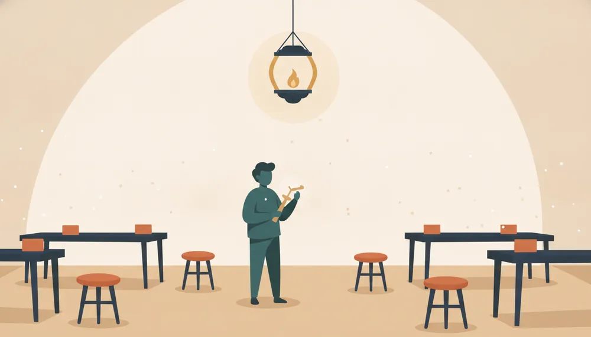

手順書には書けない「勘」や「コツ」は、教わる時間がなければ受け継げません。熟練者の年齢と、技の継承にかかる年数を入れると、この技能が組織から消える年と、後継者の育成に着手すべきだった期限が出ます。多くの場合、その期限は──もう過ぎています。数字はどこにも送信されません。
いま現場でその技を持っている人の年齢
「技能保有力」は、現役の熟練者に育成中の後継者の習熟度を足したものです。喪失ライン（1人）を下回る年に、その仕事を独力でこなせる人がいなくなります。

—
年をスライドすると、現場の様子が変わります → 2036年
暗黙知は文書化できる部分がごく一部で、残りは一緒に手を動かす時間からしか移りません。「引き継げない」のは本人の教え下手ではなく、多くの場合「教える時間が仕事として設計されていない」環境の問題です（行動工学モデル＝BEM。HPIの創始者の一人、トーマス・ギルバートが示した、成果の差は個人の能力より情報・道具・動機づけといった環境側に宿るという考え方）。解除の型は3つ──①師匠が現役のうちに「教える時間」を業務として組み込む、②技を分解し、一部を治具・映像・チェックリストへ外部化する、③そもそもその技に依存しない工程へ作り替える。どれを選ぶかは、現場と経営が同じ現状認識を持つ対話からしか始まりません。
未来リスク計算機 04／技能承継時限爆弾
ここまでの数字は、話し合いを始めるためのものです。以下に答えて印刷すると、そのまま会議で配れる1枚の記録になります。答えはこのブラウザにだけ保存され、どこにも送信されません。
※ 回答はこの端末のブラウザ内（localStorage）にのみ保存されます。サーバーには送信していません。共有したいときは印刷／PDFをお使いください。端末やブラウザを変えると消えます。
※ 簡易モデルによる試算です。後継者は現役の熟練者がいる年にのみ習熟が進み、継承年数で習熟度100％に達すると仮定しています。実際の技能移転は個人差・意欲・技の複雑さに大きく左右されます。「現場の様子」は継承状況を視覚化した概念図です。組織内の対話の出発点としてお使いください。
出典：外部の統計データは使っていません（入力された数字だけで計算しています）。
本計算機の結果は簡易な試算であり、将来を保証するものではありません。これに基づく判断・意思決定の結果について当工房は責任を負いかねます。いまのやり方・いまの生産性が続く前提で計算しており、技術や制度の変化（介護ロボットや自動化など）は織り込んでいません。変われば前提そのものが変わりますが、いつ来るか分からないものはリードタイムを見積もれないため、待つことは打ち手になりません。前提・出典の詳細と変更履歴は 未来のリスク計算機について にまとめています。